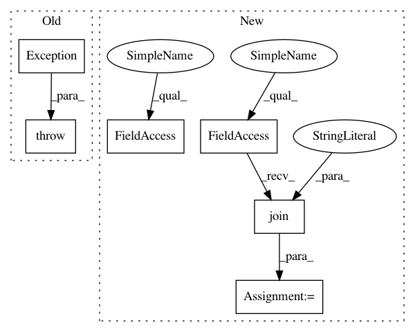

a98ad8afec08c9d6172cc1d705467985f3e9dd36,tests/test_apiconnector.py,TestAPIConnector,test_get_cached_dataset,#TestAPIConnector#,84
Before Change
raise Exception()
def test_get_cached_dataset(self):
raise Exception()
def test_get_cached_tasks(self):
raise Exception()
After Change
self.assertIsInstance(datasets.values()[0], OpenMLDataset)
def test_get_cached_dataset(self):
workdir = os.path.dirname(os.path.abspath(__file__))
workdir = os.path.join(workdir, "files")
with mock.patch.object(APIConnector, "_perform_api_call") as api_mock:
api_mock.return_value = 400, \
<oml:authenticate xmlns:oml = "http://openml.org/openml">
<oml:session_hash>G9MPPN114ZCZNWW2VN3JE9VF1FMV8Y5FXHUDUL4P</oml:session_hash>
<oml:valid_until>2014-08-13 20:01:29</oml:valid_until>
<oml:timezone>Europe/Berlin</oml:timezone>
</oml:authenticate>
connector = APIConnector(cache_directory=workdir)
dataset = connector.get_cached_dataset(2)
self.assertIsInstance(dataset, OpenMLDataset)
self.assertTrue(connector._perform_api_call.is_called_once())
def test_get_chached_dataset_description(self):
In pattern: SUPERPATTERN
Frequency: 3
Non-data size: 6
Instances
Project Name: openml/openml-python
Commit Name: a98ad8afec08c9d6172cc1d705467985f3e9dd36
Time: 2015-03-02
Author: feurerm@informatik.uni-freiburg.de
File Name: tests/test_apiconnector.py
Class Name: TestAPIConnector
Method Name: test_get_cached_dataset
Project Name: openml/openml-python
Commit Name: a98ad8afec08c9d6172cc1d705467985f3e9dd36
Time: 2015-03-02
Author: feurerm@informatik.uni-freiburg.de
File Name: tests/test_apiconnector.py
Class Name: TestAPIConnector
Method Name: test_get_cached_datasets
Project Name: tensorlayer/openpose-plus
Commit Name: 0e3dc773bfe1cc74e3c72192c5dc6fbf63864d08
Time: 2018-08-28
Author: dhsig552@163.com
File Name: train.py
Class Name:
Method Name:
Project Name: openml/openml-python
Commit Name: a98ad8afec08c9d6172cc1d705467985f3e9dd36
Time: 2015-03-02
Author: feurerm@informatik.uni-freiburg.de
File Name: tests/test_apiconnector.py
Class Name: TestAPIConnector
Method Name: test_get_cached_dataset